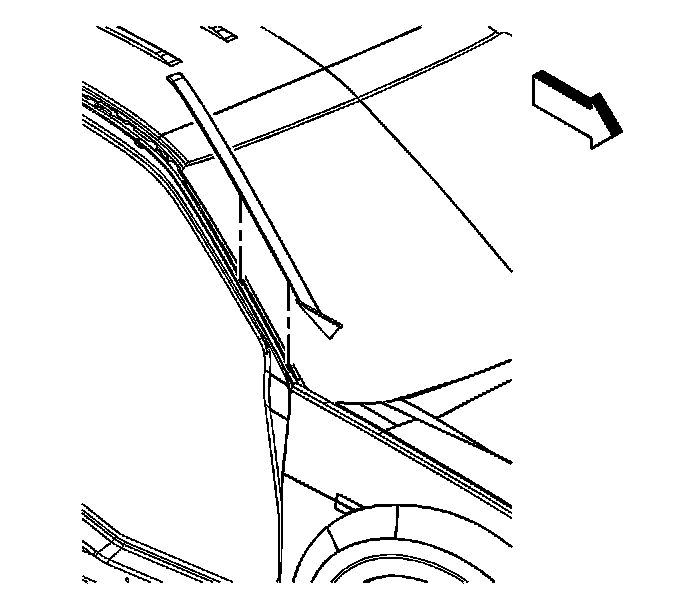

Windshield Side Reveal Molding Replacement
Windshield Side Reveal Molding Replacement
Removal Procedure

1. Apply 2 layers of masking tape on the windshield next to the reveal molding being serviced.
2. Starting from the top, using a plastic flat-bladed tool, pry up the reveal molding at the 2 retainer clip locations.
3. Remove the reveal molding from the vehicle.
4. If the molding is bent or damaged, replace the molding.
Installation Procedure
1. If the windshield reveal molding retainer clips are bent or damaged, replace the clips.
2. Align the top end of the reveal molding to the end cap tongue inside the opening of the roof rail.
3. Swing the reveal molding downward and align the molding with the clips.
4. Press down on the side reveal molding evenly in order to engage the molding to the windshield retainer clips.
5. Remove the masking tape.
6. Clean the tape residue from the windshield.